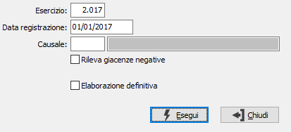

Rilevazione rimanenze
Il programma legge le esistenze finali di ciascun articolo / magazzino per l’esercizio precedente e genera automaticamente movimenti di magazzino di rilevazione esistenze iniziali in base alla causale di magazzino inserita dall’utente. Contestualmente viene prodotto un report a stampa.
Se presente il modulo del conto lavoro, la procedura rileva le rimanenze anche dei prodotti in corso di lavorazione (alle varie fasi del ciclo produttivo).

ESERCIZIO: inserire il numero dell’esercizio per cui si vuole eseguire la rilevazione delle rimanenze iniziali.
DATA REGISTRAZIONE. Indicare la data con cui si desidera siano registrati i movimenti di magazzino generati dal programma.
CAUSALE: inserire la causale di magazzino idonea alla rilevazione delle rimanenze iniziali. Sul campo è attiva la ricerca (F9) sulla tabella Causali magazzino.
RILEVA GIACENZE NEGATIVE: determina la rilevazione delle rimanenze anche per i prodotti con esistenza negativa (casella con segno di spunta).
APPLICA PREZZO PER MAGAZZINO: l'opzione è disponibile solo se la valutazione delle rimanenze è configurata a prezzo medio o costo ultimo carico; se spuntato viene utilizzato per la valorizzazione il prezzo specifico del magazzino altrimenti il prezzo complessivo del prodotto. In mancanza del prezzo medio/costo ultimo verrà utilizzato il prezzo medio/costo ultimo complessivo dell'articolo.
ELABORAZIONE DEFINITIVA: check box. Valori ammessi: vuoto = elaborazione di prova; spunta = elaborazione definitiva.